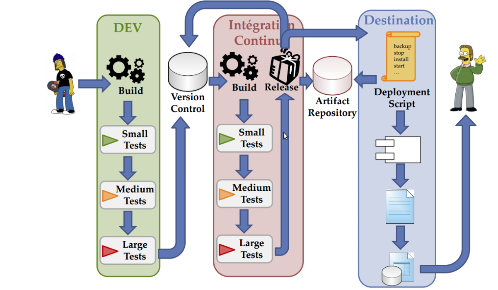

Devoxx France 2013
The review
Plan
- html5 animation
- Memory systems
- Continuous Delivery
- GWT offline
- Tools (gradle, IDE, TomEE, software factory, ...)
- Scala / JVM languages / functional programming
- Java 8 / Lambdas
- Java EE 7
- Angular JS
HTML5 animations
- CSS3 et SVG: declarative
- Canvas et WebGL: programative
Memory System
- Guy working in High frequency trading
- SQLite for storage
- Authentification (sha-1)
- Data synchronisation, conflicts management
Continuous Delivery
- Feature toggle
- DB updates
- Blue / Green deployments
Continuous Delivery
GWT offline
- Cache manifest
- SQLite for storage
- Authentification (sha-1)
- Data synchronisation, conflicts management
Tools
- Gradle
- IDE & productivity
- TomEE
- Software factory
Scala / JVM languages
Java 8 - lambdas
Example with Java 7
Runnable job = new Runnable() {
@Override
public void run() {
System.out.println("Hello Zanox");
}
};
Example with Java 8 and lambdas
Runnable job = () -> {
System.out.println("Hello Zanox");
};
Example 2 with Java 8 and lambdas
List strings = Arrays.asList("hello", "world", "!");
Collections.sort(strings, (s1, s2)-> s1.compareTo(s2));
System.out.println(strings);
Java EE 7 - Highlights

AngularJS
- Declarative vs imperative
- 2 ways binding / watches
- Dependency Injection
- Templates: pure html
- MVC
- Directives
- Unit Test (karma)
- End to end tests (synchrone test for asynchron app)
- Tools (yeoman, grunt, bower, etc...)